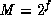

Common Lisp the Language, 2nd Edition
The Common Lisp facility for generating pseudo-random numbers has been carefully defined to make its use reasonably portable. While two implementations may produce different series of pseudo-random numbers, the distribution of values should be relatively independent of such machine-dependent aspects as word size.
[Function]
random number &optional state
(random n) accepts a positive number n and returns
a number of the same kind between zero (inclusive) and n (exclusive).
The number n may be an integer or a floating-point number.
An approximately uniform choice distribution is used.
If n is an integer, each of the possible results
occurs with (approximate) probability
1/n.
(The qualifier ``approximate'' is used because of implementation
considerations; in practice, the deviation from uniformity should be
quite small.)
The argument state must be an object of type random-state; it defaults to the value of the variable *random-state*. This object is used to maintain the state of the pseudo-random-number generator and is altered as a side effect of the random operation.
To produce random floating-point numbers in the half-open
range [A, B),
accepted practice (as determined by a look through the
Collected Algorithms from the ACM, particularly algorithms
133, 266, 294, and 370) is to compute
X * (B - A) + A,
where X is a floating-point number uniformly distributed over
[0.0, 1.0)
and computed by calculating a random integer N in the range
[0, M)
(typically by a multiplicative-congruential or linear-congruential method
mod M) and then setting X = N/M. See also [27].
If one takes , where f is the length of the significand
of a floating-point number (and it is in fact common to choose M
to be a power of 2), then this method is equivalent to the following
assembly-language-level procedure. Assume the representation
has no hidden bit. Take a floating-point 0.5,
and clobber its entire significand with random bits. Normalize the
result if necessary.
For example, on the DEC PDP-10, assume that accumulator T is completely random (all 36 bits are random). Then the code sequence
LSH T,-9 ;Clear high 9 bits; low 27 are random FSC T,128. ;Install exponent and normalize
will produce in T a random floating-point number uniformly distributed over [0.0, 1.0). (Instead of the LSH instruction, one could do
TLZ T,777000 ;That's 777000 octal
but if the 36 random bits came from a congruential random-number generator, the high-order bits tend to be ``more random'' than the low-order ones, and so the LSH would be better for uniform distribution. Ideally all the bits would be the result of high-quality randomness.)
With a hidden-bit representation, normalization is not a problem, but dealing with the hidden bit is. The method can be adapted as follows. Take a floating-point 1.0 and clobber the explicit significand bits with random bits; this produces a random floating-point number in the range [1.0, 2.0). Then simply subtract 1.0. In effect, we let the hidden bit creep in and then subtract it away again.
For example, on the DEC VAX, assume that register T is completely random (but a little less random than on the PDP-10, as it has only 32 random bits). Then the code sequence
INSV #^X81,#7,#9,T ;Install correct sign bit and exponent SUBF #^F1.0,T ;Subtract 1.0
will produce in T a random floating-point number uniformly distributed over [0.0, 1.0). Again, if the low-order bits are not random enough, then the instruction
ROTL #7,T
should be performed first.
Implementors may wish to consult reference [41] for a discussion of some efficient methods of generating pseudo-random numbers.
[Variable]
*random-state*
This variable holds a data structure, an object of type random-state, that encodes the internal state of the random-number generator that random uses by default. The nature of this data structure is implementation-dependent. It may be printed out and successfully read back in, but may or may not function correctly as a random-number state object in another implementation. A call to random will perform a side effect on this data structure. Lambda-binding this variable to a different random-number state object will correctly save and restore the old state object.
[Function]
make-random-state &optional state
This function returns a new object of type random-state, suitable for use as the value of the variable *random-state*. If state is nil or omitted, make-random-state returns a copy of the current random-number state object (the value of the variable *random-state*). If state is a state object, a copy of that state object is returned. If state is t, then a new state object is returned that has been ``randomly'' initialized by some means (such as by a time-of-day clock).
To handle the common situation of executing the same program many times in a reproducible manner, where that program uses random, the following procedure may be used:
It is also possible to make copies of a random-state object directly without going through the print/read process, simply by using the make-random-state function to copy the object; this allows the same sequence of random numbers to be generated many times within a single program.
#S(RANDOM-STATE DATA #(14 49 98436589 786345 8734658324 ...))where the components are of course completely implementation-dependent.
[Function]
random-state-p object
random-state-p is true if its argument is a random-state object, and otherwise is false.
(random-state-p x) == (typep x 'random-state)